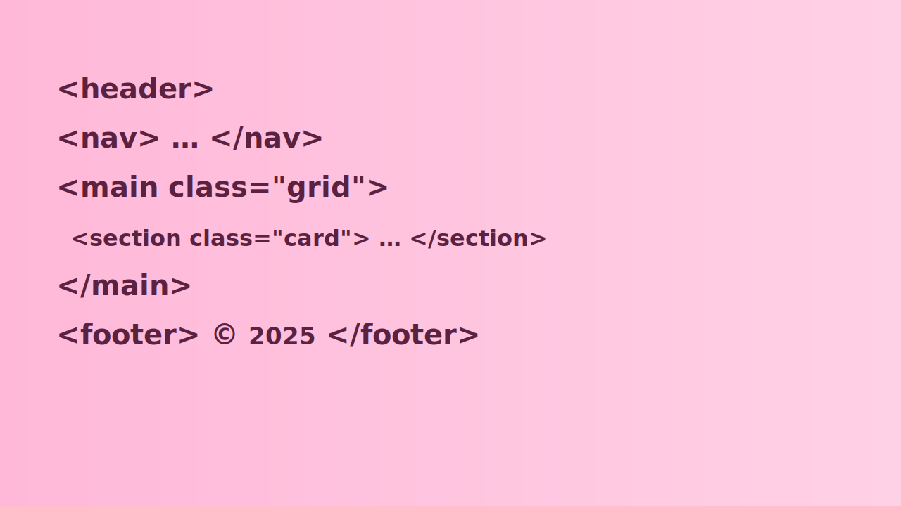

Cas Perche
About Me
Hi! I’m Cas Perche — an English teacher learning programming. This is my W01 assignment home page for WDD 131. I’m focusing on clean, accessible layouts, pastel aesthetics, and fundamentals like HTML, CSS (Flex/Grid), and a little JavaScript.
- Location: Argentina
- Interests: web accessibility, creative design, and front‑end fundamentals
Web Dev Resources
Some helpful places while I learn: